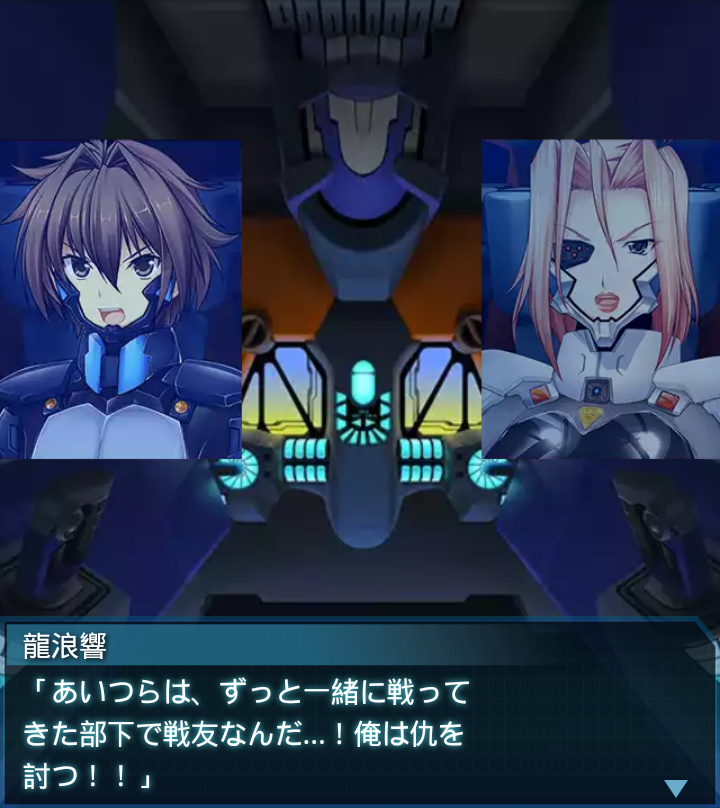
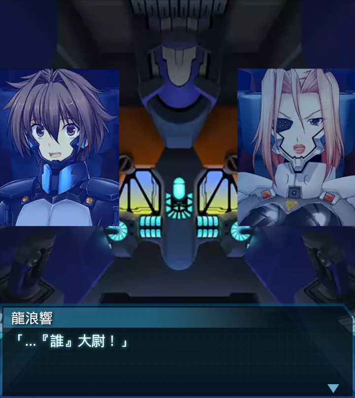

エジプト・研究施設2
ブリギッテ
「邪魔だ、どけぇぇッ！！！！
何としても突破し、突撃前衛の任、
全うしてくれる！」
千堂柚香
「す、凄い。あのＥＦ－２０００の
動き。何より諦めない姿勢…。
ベスターナッハ中尉…」
ブリギッテ
「何を呆けている、そこの不知火！
ウォードッグ２だったか！貴様、
死にたいのか！」

千堂柚香
「も、申し訳ありませんっ！私も
はああああぁ…っ！」
ブリギッテ
「良い動きだ、ウォードッグ２！
やればできるじゃないか。む…？
あれはッ！大尉！ゲートを視認！
『誰』
「よし、後ひと踏ん張で空を
拝めるぞ！諦めるな！続け！」
『誰』
「なんとか、外部に出られたな…」
龍浪響
「ちくしょう…。外にいた奴らは
全滅じゃねえか…！ちくしょう！」
ブリギッテ
「…酷い有様だ。せめて私が残って
いれば…」

『誰』
「指揮官は俺だ。二人が死者の命を
背負う必要は無い。急ぎ、この
戦域から離脱するぞ」

龍浪響
「あいつらは、ずっと一緒に戦って
きた部下で戦友なんだ…！俺は仇を
討つ！！」
ブリギッテ
「単機で何ができる！どうする
つもりだ！」
龍浪響
「１匹でも多くＢＥＴＡ共を
ぶっ潰して、あいつらの手向けに
してやるんですよ！」
『誰』
「軍隊はセンチメンタルな感情で
動くものではない。勝手な振る
舞いは許可できない」
『誰』
「だが、気持ちは痛いほど理解
できる。オアーゼ１！敵勢力は数を
減らしているように見えるが！」
ブリギッテ
「はっ！ゲート確保に当たっていた
部隊が命と引き換えに、相当数の
敵を撃破してくれたようです！」
『誰』
「優秀な連中だったようだ。現状の
戦力とＢＥＴＡの数を比較し、
充分に対処できると判断！

龍浪響
「…『誰』大尉！」
『誰』
「推進剤も弾薬も多くは余って
いない！手早くかたをつける！
ミイラ取りがミイラにはなるな！
『誰』
「機体のチェック、残弾の確認！
客は待ってくれないぞ！
手早く行え！」